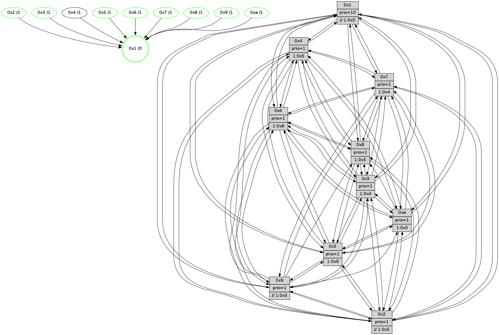

>> << IDX [start] -100 -25 -5 +0 +5 +25 +100 [800.381541014]
 Previous packets
----------------------------------------------------------------------
795.652752 beacon01(faad) #0 coord=01,02,03,04,05,06,07,0a,09,08 cycle=688.0ms assoc
-- color-indic=1 64 ce b3
795.662735 beacon02(faad) #0 coord=01,02,03,04,05,06,07,0a,09,08 cycle=688.0ms assoc 64 5d 82
795.672736 beacon03(faad) #0 coord=01,02,03,04,05,06,07,0a,09,08 cycle=688.0ms assoc 64 27 cf
795.682736 beacon04(faad) #0 coord=01,02,03,04,05,06,07,0a,09,08 cycle=688.0ms assoc 64 50 25
795.692735 beacon05(faad) #0 coord=01,02,03,04,05,06,07,0a,09,08 cycle=688.0ms assoc 64 2a 68
795.702735 beacon06(faad) #0 coord=01,02,03,04,05,06,07,0a,09,08 cycle=688.0ms assoc 64 a4 bf
795.712736 beacon07(faad) #0 coord=01,02,03,04,05,06,07,0a,09,08 cycle=688.0ms assoc 64 de f2
795.722741 beacon0a(faad) #0 coord=01,02,03,04,05,06,07,0a,09,08 cycle=688.0ms assoc 64 af f9
795.732741 beacon09(faad) #0 coord=01,02,03,04,05,06,07,0a,09,08 cycle=688.0ms assoc 64 21 2e
795.742743 beacon08(faad) #0 coord=01,02,03,04,05,06,07,0a,09,08 cycle=688.0ms assoc 64 5b 63
795.754227 [Hello(4): seq=509 sym=5,7,6,2,3,9,8,10,1 sysInfo= stat=5:8,6,12,8/7:3,14,15,3/6:4,8,15,8/2:8,6,9,8/3:8,13,9,5/9:6,12,12,3/8:10,0,13,9/10:1,13,1,7/1:13,1,7,1]
795.757279 [Color(3) seq=150 @0:0 prio=1 >1.@4,1.@5,1.@6,1.@7]
795.759455 [Hello(9): seq=453 sym=2,5,3,4,7,6,8,10,1 sysInfo=hasWarning stat=2:10,3,6,0/5:11,0,8,1/3:12,10,8,9/4:11,7,10,5/7:11,13,2,6/6:14,0,12,6/8:0,9,3,1/10:8,1,4,0/1:12,15,7,1]
795.762288 [Hello(10): seq=442 sym=6,2,3,8,9,5,7,4,1 sysInfo=hasWarning stat=6:9,8,15,3/2:1,12,7,2/3:9,4,7,6/8:11,15,10,8/9:1,5,0,0/5:4,15,13,10/7:0,11,13,4/4:4,11,5,6/1:1,4,8,1]
795.765295 [Color(9) seq=158 @0:0 prio=1 >>1.@5,1.@6,1.@7]
795.767343 [Hello(7): seq=509 sym=2,3,5,6,4,8,9,10,1 sysInfo=hasWarning stat=2:9,14,3,10/3:13,8,2,9/5:8,0,3,13/6:4,3,3,3/4:2,0,0,0/8:7,15,1,6/9:4,10,1,9/10:13,13,4,8/1:2,2,6,0]
795.770704 [Color(6) seq=163 @0:0 prio=1 >1.@8,1.@9,1.@a]
795.772873 [Hello(8): seq=453 sym=5,2,3,4,7,6,9,1 sysInfo=hasWarning stat=5:1,1,0,9/2:10,10,7,2/3:15,1,13,9/4:12,8,13,6/7:11,8,0,8/6:0,8,11,8/9:9,5,13,6/1:6,0,4,0]
795.776520 [Color(8) seq=176 @0:0 prio=1 >1.@5,1.@9,1.@a]
795.781639 [Color(10) seq=141 @0:0 prio=1 >1.@5,1.@8,1.@9]
----------------------------------------------------------------------
796.440883 beacon01(faad) #0 coord=01,02,03,04,05,06,07,0a,09,08 cycle=688.0ms assoc
-- color-indic=1 64 fa ab
796.450866 beacon02(faad) #0 coord=01,02,03,04,05,06,07,0a,09,08 cycle=688.0ms assoc 64 69 9a
796.460865 beacon03(faad) #0 coord=01,02,03,04,05,06,07,0a,09,08 cycle=688.0ms assoc 64 13 d7
796.470865 beacon04(faad) #0 coord=01,02,03,04,05,06,07,0a,09,08 cycle=688.0ms assoc 64 64 3d
796.480866 beacon05(faad) #0 coord=01,02,03,04,05,06,07,0a,09,08 cycle=688.0ms assoc 64 1e 70
796.490866 beacon06(faad) #0 coord=01,02,03,04,05,06,07,0a,09,08 cycle=688.0ms assoc 64 90 a7
796.500866 beacon07(faad) #0 coord=01,02,03,04,05,06,07,0a,09,08 cycle=688.0ms assoc 64 ea ea
796.510870 beacon0a(faad) #0 coord=01,02,03,04,05,06,07,0a,09,08 cycle=688.0ms assoc 64 9b e1
796.520869 beacon09(faad) #0 coord=01,02,03,04,05,06,07,0a,09,08 cycle=688.0ms assoc 64 15 36
796.530872 beacon08(faad) #0 coord=01,02,03,04,05,06,07,0a,09,08 cycle=688.0ms assoc 64 6f 7b
796.543040 [Hello(6): seq=510 sym=2,3,5,4,7,9,8,10,1 sysInfo= stat=2:3,2,5,7/3:2,0,14,7/5:14,14,15,10/4:11,7,10,0/7:5,11,11,2/9:2,6,0,0/8:11,1,13,7/10:11,9,4,7/1:3,14,3,1]
796.547140 [Hello(5): seq=510 sym=7,6,4,3,1,9,8,10,2 sysInfo=hasWarning stat=7:15,1,1,6/6:8,2,0,7/4:10,8,5,5/3:11,12,7,7/1:5,13,7,1/9:3,1,10,0/8:7,9,8,6/10:11,15,6,1/2:1,3,1,0]
796.550586 [Hello(2): seq=506 sym=4,5,7,6,3,9,8,10,1 sysInfo=hasWarning stat=4:2,3,10,4/5:2,15,8,2/7:15,14,1,6/6:4,5,15,6/3:6,2,8,4/9:11,1,9,0/8:11,13,8,6/10:4,2,9,6/1:4,10,1,1]
796.553703 [Hello(3): seq=510 sym=1,7,6,2,4,8,9,10,5 sysInfo= stat=1:14,15,10,0/7:10,11,11,4/6:7,8,6,8/2:11,13,11,8/4:3,2,7,5/8:3,11,10,4/9:8,3,14,7/10:10,12,12,7/5:4,12,9,8]
796.557281 [Color(5) seq=163 @0:0 prio=1 >1.@9,1.@a]
796.560403 [Color(2) seq=155 @0:0 prio=1 >>1.@5,1.@6,1.@7]
796.563759 [Color(7) seq=129 @0:0 prio=1 >1.@4,1.@5,1.@6,1.@8]
----------------------------------------------------------------------
797.229015 beacon01(faad) #0 coord=01,02,03,04,05,06,07,0a,09,08 cycle=688.0ms assoc
-- color-indic=1 64 46 ae
797.238997 beacon02(faad) #0 coord=01,02,03,04,05,06,07,0a,09,08 cycle=688.0ms assoc 64 d5 9f
797.248997 beacon03(faad) #0 coord=01,02,03,04,05,06,07,0a,09,08 cycle=688.0ms assoc 64 af d2
797.258998 beacon04(faad) #0 coord=01,02,03,04,05,06,07,0a,09,08 cycle=688.0ms assoc 64 d8 38
797.268998 beacon05(faad) #0 coord=01,02,03,04,05,06,07,0a,09,08 cycle=688.0ms assoc 64 a2 75
797.279000 beacon06(faad) #0 coord=01,02,03,04,05,06,07,0a,09,08 cycle=688.0ms assoc 64 2c a2
797.288999 beacon07(faad) #0 coord=01,02,03,04,05,06,07,0a,09,08 cycle=688.0ms assoc 64 56 ef
797.299003 beacon0a(faad) #0 coord=01,02,03,04,05,06,07,0a,09,08 cycle=688.0ms assoc 64 27 e4
797.309004 beacon09(faad) #0 coord=01,02,03,04,05,06,07,0a,09,08 cycle=688.0ms assoc 64 a9 33
797.319004 beacon08(faad) #0 coord=01,02,03,04,05,06,07,0a,09,08 cycle=688.0ms assoc 64 d3 7e
797.330239 [Hello(7): seq=510 sym=2,3,5,6,4,8,9,10,1 sysInfo=hasWarning stat=2:9,14,3,10/3:13,8,2,9/5:8,0,3,13/6:5,4,3,3/4:2,0,0,0/8:8,0,1,6/9:4,10,1,9/10:13,14,4,8/1:2,2,6,0]
797.333808 [STC(1) #0.87 tree-change,inconsistent-stability,stable,to-color d=0]
797.335035 [Color(6) seq=164 @0:0 prio=1 >1.@8,1.@9,1.@a]
797.337340 [Hello(8): seq=454 sym=5,2,3,4,7,6,1 sysInfo=hasWarning stat=5:2,2,0,9/2:11,11,7,2/3:0,1,13,9/4:13,8,13,6/7:11,9,0,8/6:1,8,11,8/1:6,1,4,0]
797.339750 [Color(3) seq=151 @0:0 prio=1 >1.@4,1.@5,1.@6,1.@7]
797.341844 [Color(8) seq=177 @0:0 prio=1 >1.@5,1.@9,1.@a]
797.344787 [Hello(4): seq=510 sym=5,7,6,2,3,9,8,10,1 sysInfo= stat=5:9,7,12,8/7:4,15,15,3/6:5,9,15,8/2:9,7,9,8/3:9,13,9,5/9:7,13,12,3/8:11,1,13,9/10:2,14,1,7/1:13,2,7,1]
797.348589 [Color(1) seq=191 @0:0 prio=10 >>1.@5,1.@6,1.@7]
797.351125 [Hello(10): seq=443 sym=6,2,3,8,5,7,4,1 sysInfo=hasWarning stat=6:10,8,15,3/2:2,12,7,2/3:10,5,7,6/8:11,15,10,8/5:5,0,13,10/7:0,12,13,4/4:5,11,5,6/1:2,4,8,1]
797.354312 [Color(9) seq=159 @0:0 prio=1 >>1.@5,1.@6,1.@7]
797.356043 [Color(10) seq=142 @0:0 prio=1 >1.@5,1.@8,1.@9]
----------------------------------------------------------------------
798.017147 beacon01(faad) #0 coord=01,02,03,04,05,06,07,0a,09,08 cycle=688.0ms assoc
-- color-indic=1 64 82 a0
798.027129 beacon02(faad) #0 coord=01,02,03,04,05,06,07,0a,09,08 cycle=688.0ms assoc 64 11 91
798.037129 beacon03(faad) #0 coord=01,02,03,04,05,06,07,0a,09,08 cycle=688.0ms assoc 64 6b dc
798.047130 beacon04(faad) #0 coord=01,02,03,04,05,06,07,0a,09,08 cycle=688.0ms assoc 64 1c 36
798.057130 beacon05(faad) #0 coord=01,02,03,04,05,06,07,0a,09,08 cycle=688.0ms assoc 64 66 7b
798.067129 beacon06(faad) #0 coord=01,02,03,04,05,06,07,0a,09,08 cycle=688.0ms assoc 64 e8 ac
798.077130 beacon07(faad) #0 coord=01,02,03,04,05,06,07,0a,09,08 cycle=688.0ms assoc 64 92 e1
798.087134 beacon0a(faad) #0 coord=01,02,03,04,05,06,07,0a,09,08 cycle=688.0ms assoc 64 e3 ea
798.097136 beacon09(faad) #0 coord=01,02,03,04,05,06,07,0a,09,08 cycle=688.0ms assoc 64 6d 3d
798.107136 beacon08(faad) #0 coord=01,02,03,04,05,06,07,0a,09,08 cycle=688.0ms assoc 64 17 70
798.119027 [Hello(6): seq=511 sym=2,3,5,4,7,8,10,1 sysInfo= stat=2:4,3,5,7/3:3,1,14,7/5:15,15,15,10/4:12,7,10,0/7:6,12,11,2/8:12,2,13,7/10:12,10,4,7/1:3,15,3,1]
798.121440 [STC(9)->1 #0.87 tree-change,inconsistent-stability,stable,to-color d=1]
798.122971 [Hello(2): seq=507 sym=4,5,7,6,3,9,8,10,1 sysInfo=hasWarning stat=4:3,3,10,4/5:2,15,8,2/7:0,15,1,6/6:5,6,15,6/3:6,3,8,4/9:11,2,9,0/8:12,14,8,6/10:4,3,9,6/1:4,11,2,1]
798.126747 [STC(2)->1 #0.87 tree-change,inconsistent-stability,stable,to-color d=1]
798.128719 [Hello(1): seq=420 sym=4,2,9,5,10,3,8,6,7 sysInfo=coloring-mode-on,ColoringModeRequestCalled stat=4:0,5,15,0/2:13,2,7,9/9:14,8,13,1/5:14,15,0,2/10:9,5,6,8/3:9,8,5,0/8:6,5,7,8/6:13,15,7,7/7:5,9,12,10]
798.132048 [Color(2) seq=156 @0:0 prio=1 >>1.@5,1.@6,1.@7]
798.134084 [STC(7)->1 #0.87 tree-change,inconsistent-stability,stable,to-color d=1]
798.137127 [Hello(3): seq=511 sym=1,7,6,2,4,8,9,10,5 sysInfo= stat=1:15,0,10,0/7:11,12,11,4/6:7,8,6,8/2:11,13,11,8/4:4,2,7,5/8:3,12,10,4/9:8,4,14,7/10:11,13,12,7/5:4,13,9,8]
798.140315 [TreeStatus(7)-.->1 #0.87 tree-change,inconsistent-stability,stable child=1]
798.142369 [Hello(5): seq=511 sym=7,6,4,3,1,9,8,10,2 sysInfo=hasWarning stat=7:0,2,1,6/6:9,3,0,7/4:11,8,5,5/3:11,13,7,7/1:5,14,8,1/9:3,2,10,0/8:8,10,8,6/10:11,0,6,1/2:1,4,1,0]
798.145487 [Color(7) seq=130 @0:0 prio=1 >1.@4,1.@5,1.@6,1.@8]
798.148852 [STC(5)->1 #0.87 tree-change,inconsistent-stability,stable,to-color d=1]
798.150513 [Color(5) seq=164 @0:0 prio=1 >1.@9,1.@a]
----------------------------------------------------------------------
798.805280 beacon01(faad) #0 coord=01,02,03,04,05,06,07,0a,09,08 cycle=688.0ms assoc
-- color-indic=1 64 3e a5
798.815262 beacon02(faad) #0 coord=01,02,03,04,05,06,07,0a,09,08 cycle=688.0ms assoc 64 ad 94
798.825263 beacon03(faad) #0 coord=01,02,03,04,05,06,07,0a,09,08 cycle=688.0ms assoc 64 d7 d9
798.835264 beacon04(faad) #0 coord=01,02,03,04,05,06,07,0a,09,08 cycle=688.0ms assoc 64 a0 33
798.845262 beacon05(faad) #0 coord=01,02,03,04,05,06,07,0a,09,08 cycle=688.0ms assoc 64 da 7e
798.855264 beacon06(faad) #0 coord=01,02,03,04,05,06,07,0a,09,08 cycle=688.0ms assoc 64 54 a9
798.865263 beacon07(faad) #0 coord=01,02,03,04,05,06,07,0a,09,08 cycle=688.0ms assoc 64 2e e4
798.875268 beacon0a(faad) #0 coord=01,02,03,04,05,06,07,0a,09,08 cycle=688.0ms assoc 64 5f ef
798.885267 beacon09(faad) #0 coord=01,02,03,04,05,06,07,0a,09,08 cycle=688.0ms assoc 64 d1 38
798.895269 beacon08(faad) #0 coord=01,02,03,04,05,06,07,0a,09,08 cycle=688.0ms assoc 64 ab 75
798.906497 [Hello(7): seq=511 sym=2,3,5,6,4,8,9,10,1 sysInfo=hasWarning stat=2:9,14,3,10/3:13,9,2,9/5:8,1,4,13/6:6,5,3,3/4:3,0,0,0/8:9,1,1,6/9:4,11,2,9/10:14,15,4,8/1:2,3,7,0]
798.908946 [Hello(4): seq=511 sym=5,7,6,2,3,9,8,10,1 sysInfo= stat=5:10,8,13,8/7:4,0,0,4/6:6,9,15,8/2:10,8,10,8/3:10,13,9,5/9:8,14,13,3/8:11,1,13,9/10:2,15,1,7/1:14,3,7,1]
798.911986 [Color(3) seq=152 @0:0 prio=1 >1.@4,1.@5,1.@6,1.@7]
798.913913 [Hello(9): seq=455 sym=2,5,3,4,7,6,8,10,1 sysInfo=hasWarning stat=2:12,5,7,0/5:13,2,9,1/3:14,11,8,9/4:12,7,10,5/7:13,15,3,7/6:15,1,12,6/8:1,10,3,1/10:8,3,4,0/1:13,15,8,1]
798.916739 [Hello(10): seq=444 sym=6,2,3,8,5,7,4,1 sysInfo=hasWarning stat=6:11,8,15,3/2:3,13,8,2/3:11,5,7,6/8:11,15,10,8/5:6,1,14,10/7:1,13,14,5/4:5,11,5,6/1:3,4,8,1]
798.920698 [Color(10) seq=143 @0:0 prio=1 >1.@5,1.@8,1.@9]
798.930636 [Hello(8): seq=455 sym=5,2,3,4,7,6,1 sysInfo=hasWarning stat=5:3,3,1,9/2:12,12,8,2/3:1,1,13,9/4:14,8,13,6/7:12,10,1,9/6:2,8,11,8/1:7,2,4,0]
798.935440 [Color(8) seq=178 @0:0 prio=1 >1.@5,1.@9,1.@a]
798.940997 [Color(1) seq=192 @0:0 prio=10 >>1.@5,1.@6,1.@7]
----------------------------------------------------------------------
799.593411 beacon01(faad) #0 coord=01,02,03,04,05,06,07,0a,09,08 cycle=688.0ms assoc
-- color-indic=1 64 ea 90
799.603394 beacon02(faad) #0 coord=01,02,03,04,05,06,07,0a,09,08 cycle=688.0ms assoc 64 79 a1
799.613392 beacon03(faad) #0 coord=01,02,03,04,05,06,07,0a,09,08 cycle=688.0ms assoc 64 03 ec
799.623394 beacon04(faad) #0 coord=01,02,03,04,05,06,07,0a,09,08 cycle=688.0ms assoc 64 74 06
799.633393 beacon05(faad) #0 coord=01,02,03,04,05,06,07,0a,09,08 cycle=688.0ms assoc 64 0e 4b
799.643394 beacon06(faad) #0 coord=01,02,03,04,05,06,07,0a,09,08 cycle=688.0ms assoc 64 80 9c
799.653394 beacon07(faad) #0 coord=01,02,03,04,05,06,07,0a,09,08 cycle=688.0ms assoc 64 fa d1
799.663398 beacon0a(faad) #0 coord=01,02,03,04,05,06,07,0a,09,08 cycle=688.0ms assoc 64 8b da
799.673398 beacon09(faad) #0 coord=01,02,03,04,05,06,07,0a,09,08 cycle=688.0ms assoc 64 05 0d
799.683399 beacon08(faad) #0 coord=01,02,03,04,05,06,07,0a,09,08 cycle=688.0ms assoc 64 7f 40
799.694653 [Hello(1): seq=421 sym=4,2,9,5,10,3,8,6,7 sysInfo=coloring-mode-on,ColoringModeRequestCalled stat=4:1,5,15,0/2:13,3,7,9/9:14,8,13,1/5:15,0,1,2/10:9,5,6,8/3:10,8,5,0/8:6,5,7,8/6:13,15,7,7/7:6,10,13,11]
799.697780 [Color(7) seq=131 @0:0 prio=1 >1.@4,1.@5,1.@6,1.@8]
799.699543 [Hello(3): seq=512 sym=1,7,6,2,4,8,9,10,5 sysInfo= stat=1:15,1,10,0/7:12,13,11,5/6:7,8,6,8/2:11,13,11,8/4:5,2,7,5/8:4,13,10,4/9:9,4,14,7/10:12,14,12,7/5:5,14,10,8]
799.702660 [Hello(2): seq=508 sym=4,5,7,6,3,9,8,10,1 sysInfo=hasWarning stat=4:4,3,10,4/5:3,0,9,2/7:1,0,2,7/6:6,6,15,6/3:7,3,8,4/9:12,2,10,0/8:13,15,8,6/10:5,4,9,6/1:4,12,2,1]
799.705353 [Hello(5): seq=512 sym=7,6,4,3,1,9,8,10,2 sysInfo=hasWarning stat=7:1,2,1,6/6:10,3,0,7/4:12,8,5,5/3:11,13,7,7/1:5,15,8,1/9:4,3,11,0/8:9,11,8,6/10:11,1,6,1/2:1,4,1,0]
799.708186 [Color(5) seq=165 @0:0 prio=1 >1.@9,1.@a]
799.715625 [Hello(6): seq=512 sym=2,3,5,4,7,9,8,10,1 sysInfo= stat=2:5,4,6,7/3:4,1,14,7/5:0,0,0,10/4:13,7,10,0/7:7,13,12,3/9:0,0,0,0/8:13,3,13,7/10:13,11,4,7/1:4,0,3,1]
799.718377 [Color(2) seq=157 @0:0 prio=1 >>1.@5,1.@6,1.@7]